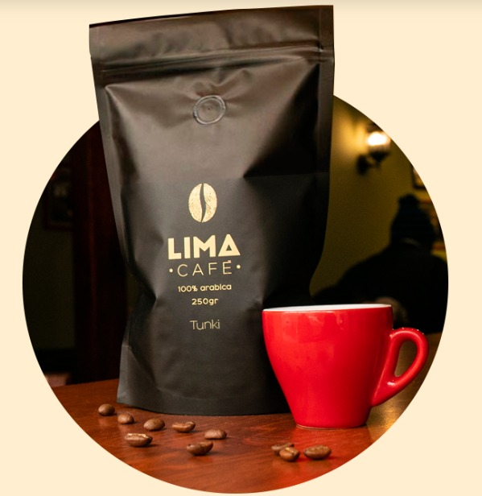

PURO CAFE
Café Tunki Cultivado en la zona tropical de Puno por los socios de la cooperativa Cecovasa, quienes gracias a su dedicación y esfuerzo han logrado un café que ha sido premiado como uno de los mejores cafés del mundo.

TÚ CREAS EL MOMENTO NOSOTROS EL LUGAR... ¡ ¡Te esperamos!